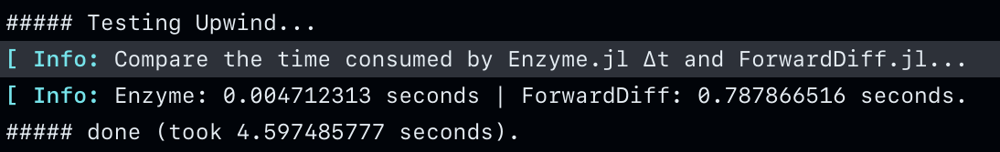

TrixiEnzyme
Getting started
Wikipedia's automatic differentiation entry is a useful resource for learning about the advantages of AD techniques over other common differentiation methods (such as finite differencing).
TrixiEnzyme is not a registered Julia package, and it can be installed by running:
] add https://github.com/junyixu/TrixiEnzyme.jl.gitNotes about Enzyme
Allocations of temporary arrays like these puts more pressure on the GC and impacts performance. That's why we have decided to pre-allocate them in create_cache - which is called when the semidiscretization semi is constructed. This is why we need Enzyme.jl, which supports mutating operations.
There's still some caveats to make_zero! since it's brand new so there's some edge cases on a few structures, but those will get worked out and this flow should be the recommended path. One needs to be careful with a vanilla closure outside Enzyme. If one writes to caches and expect to differentiate through them, then the closure should be duplicated for handling the derivative of those values. If you want to track derivatives through arrays that are enclosed, you have to duplicate the array to have shadow memory for its differentiation. if you want to track derivatives through arrays that are enclosed, you have to duplicate the array to have shadow memory for its differentiation So if you only have the original memory, you cannot do the differentiation since you don't have a place to store the extra values. In a simplified sense, a Dual{Float64} is 128 bits, Float64 is 64 bits, so if you're writing to a buffer of 5 Float64 numbers, you need 5264 bits of space to keep a dual number, which you don't have. So the best thing to do for a user would be to separate out the things that you need to track through, make them arguments to the function, and then simply Duplicate on those. This is how TrixiEnzyme.jacobian_enzyme_forward works: Extract the arguments from semi.cache and duplicate them to store shadows.
Configuring Batch Size
To utilize Enzyme.BatchDuplicated(x, ∂f_∂xs) or Enzyme.BatchDuplicatedNoNeed(x, ∂f_∂xs), one can create a tuple containing duals (or shadows). TrixiEnzyme.jl performs partial derivative evaluation on one "batch" of the input vector at a time. Each differentiation of a batch requires a call to the target function as well as additional memory proportional to the square of the batch's size. Thus, a smaller batch size makes better use of memory bandwidth at the cost of more calls to the target function, while a larger batch size reduces calls to the target function at the cost of more memory bandwidth.
julia> x = -1:0.5:1;
julia> batch_size = 2
julia> @time jacobian_enzyme_forward(TrixiEnzyme.upwind!, x, N=batch_size)
0.000040 seconds (31 allocations: 1.547 KiB)
5×5 Matrix{Float64}:
-0.2 -0.0 -0.0 -0.0 0.2
0.2 -0.2 -0.0 -0.0 -0.0
-0.0 0.2 -0.2 -0.0 -0.0
-0.0 -0.0 0.2 -0.2 -0.0
-0.0 -0.0 -0.0 0.2 -0.2
julia> x = -1:0.01:1;
julia> @time jacobian_enzyme_forward(TrixiEnzyme.upwind!, x, N=2);
0.000539 seconds (1.34 k allocations: 390.969 KiB)
julia> @time jacobian_enzyme_forward(TrixiEnzyme.upwind!, x, N=11);
0.000332 seconds (307 allocations: 410.453 KiB)When the cache is relatively small and you have appropriately chosen the batch size, Enzyme generally performs faster than ForwardDiff (see test). 
If you do not explicitly provide a batch size, TrixiEnzyme will try to guess one for you based on your input vector:
julia> x = -1:0.01:1;
julia> @time jacobian_enzyme_forward(TrixiEnzyme.upwind!, x);
0.000327 seconds (307 allocations: 410.453 KiB)Benchmark for a 401x401 Jacobian of TrixiEnzyme.upwind! (Lower is better): 
Enyme(@batch) means applying Polyester.@batch to middlebatches.